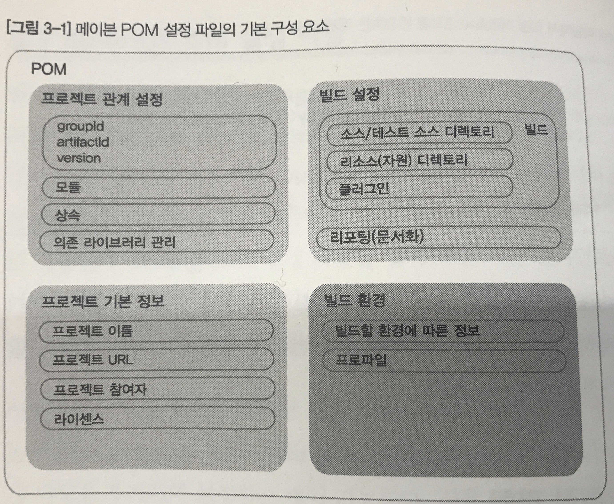
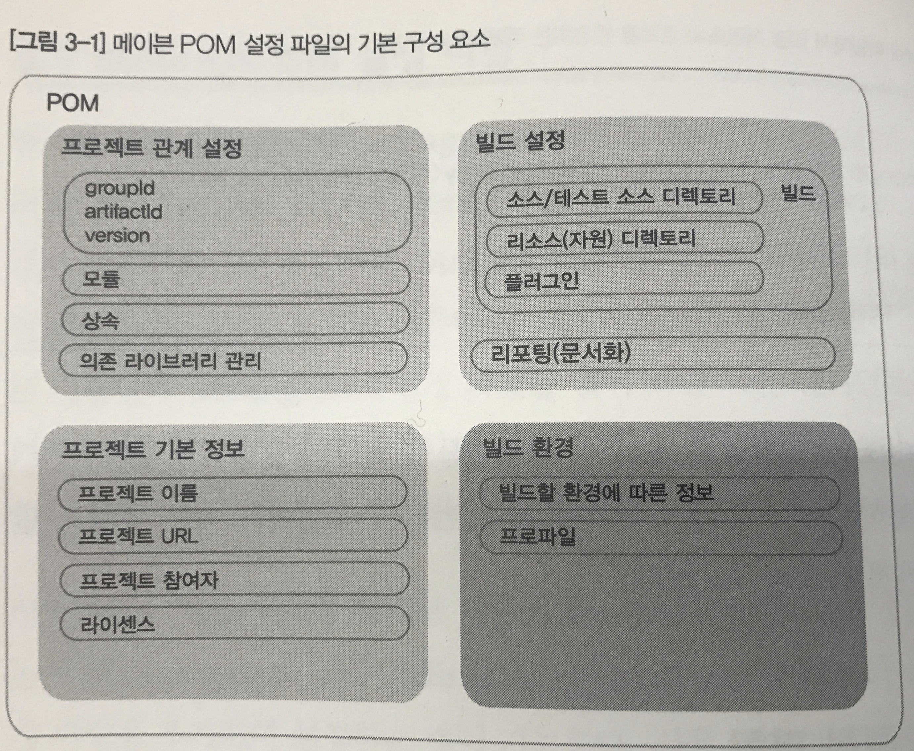
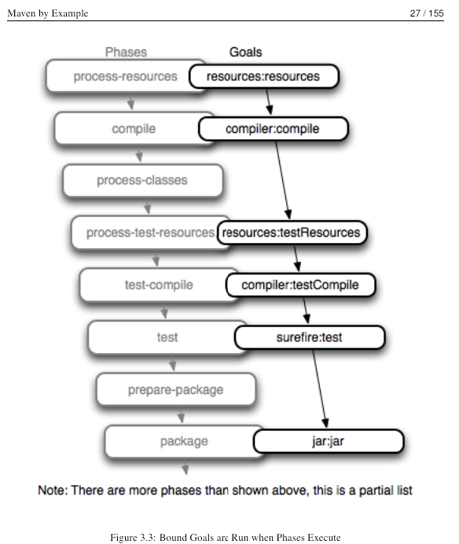

Keyword
maven build
Reference
- 자바 세상의 빌드를 이끄는 메이븐 - 박재성 지음
- Maven in 5 Minutes
- Introduction to the POM
- POM Reference
- Maven: The Definitive Guide
보는 중
상황/ 궁금증
- 'Effectiv Unit Testing'책의 예제코드를 보니 submodule로 구성되어 각 디렉토리가 독립된 프로젝트로 구성되어있음. 이거 build 어떻게 하지 당황하다가, maven
- 그동안 설정이 꼬일 때마다 애써 외면해왔던
mvnbuild 에 드디어 입문해야할 시기임을 느껴... - yark shaving 하는 기분이지만, build 와 debugging에 대한 이해가 매우 부족해 더이상 미뤄둘 수 없다는 생각이 들었음.
진행(2018/01/12 ~)
1. 책 예제 + 인터넷 자료 (2018/01/12 ~)
- Tutorial에서 확장 -> 모르는 개념 검색 보충
- 책에서 읽었는데도 이해하지 못한 내용은 tag 유지해둠. 다시 읽기.
2. 맡고 있는 프로젝트에 배운 내용 적용
작성글
1. :+1: 왜 Maven을 사용하는거지?
개발환경 개선: 핵심 비즈니스 로직에 집중하려고(복잡한 프로젝트 구조, 라이브러리 의존성 대신)- 사례 : 개발계 / 운영계 서버간 환경이 다름. (표준을 준수하였으면)build 환경을 자유롭게 세팅가능 (개발계 - tomcat / 운영계 - weblogic)
의존관계라이브러리 관리 (그동안 이것만 씀)- 나는!
단위테스트 자동화+report가 가능하다는 게 충격! 왜 그동안 build안에 단위테스트 자동실행은 생각못했지?- maven은 기본적으로 build할때 단위테스트를 진행함!
- 게다가,
문서도 자동으로 만들어줌!mvn site 소스코드관리릴리즈배포이건 아직 안와닿음.개발환경 자동화(~CI)- 왜 필요? 지금은 테스트자동화만 와닿음.
2. maven_in_5min
3. Maven 설정파일 POM / setting.xml
Intro
- maven은 convention에 따라 Direcotry 구조 정해져있음 -> 기본 구조 어디서 관리하고 있지? 변경할 수 있나?
- maven 으로 만들어지지 않은 project를 maven으로 변경할 수 있을까?
- YES! pom.xml 수정해 프로젝트에 맞게 설정변경
POM(Project Object Model)?
- 프로젝트 설정파일 + 정보 >information about the project and configuration details used by Maven to build the project.
- pom으로 설정할 수 있는 것?
- pom 구조
 

- Project Inheritance
- POM 상속을 통해 project Inheritance 함.
- 상속하고 있는 pom 확인 : in project path :
mvn help:effective-pom
- 상속하고 있는 pom 확인 : in project path :
- project pom은 default로 Super POM(최상위 POM)을 상속
The Super POM is Maven's default POM. All POMs extend the Super POM unless explicitly set, meaning the configuration specified in the Super POM is inherited by the POMs you created for your projects.
- POM 상속을 통해 project Inheritance 함.
- project 식별
- groupId,artifactId,version : project deploy배포, 배포 project를 다른 project에서 참조할때 사용.
: : = "com.mycompany.app:my-app:1" groupId + artifactId은 유일값: maven의 center repository 에서 모든 lib 관리하기때문에, 각각 project는 고유값으로 식별되어야함.- 프로젝트마다 설정다르므로, 중앙(MAVEN_HOME)에서 프로젝트에 따라 설정해주기 위해 식별 필요.
if the configuration details are not specified, Maven will use their defaults. One of these default values is the packaging type. Every Maven project has a packaging type. If it is not specified in the POM, then the default value "jar" would be used.
- groupId,artifactId,version : project deploy배포, 배포 project를 다른 project에서 참조할때 사용.
etc
- 다른 pom.xml 사용가능 : '-f','-file'option -
mvn -f mypom.xml test
Setting.xml
- Maven Build tool 설정파일
- 전체 setting(default) : MAVEN_HOME/conf/settings.xml
- user별(생성필요/default 복사하세여) : USER_HOME/.m2/settings.xml '메이븐'책 실습 [질문던지기 -> 실습]
- 지금 시점에 java source 와 web soruce 를 나눌 필요가 있을까? -> 합치자
- webapp 디렉토리가 하위에 있으면 작업하기 불편 -> webapp 최상위 디렉토리로 변경.
Maven Build

[INFO] Scanning for projects...
//WARNING 01
[WARNING]
[WARNING] Some problems were encountered while building the effective model for net.ohah:wikibook:war:1.0-SNAPSHOT
[WARNING] 'build.plugins.plugin.version' for org.apache.maven.plugins:maven-war-plugin is missing. @ line 21, column 15
[WARNING]
[WARNING] It is highly recommended to fix these problems because they threaten the stability of your build.
[WARNING]
[WARNING] For this reason, future Maven versions might no longer support building such malformed projects.
[WARNING]
[INFO]
[INFO] ------------------------------------------------------------------------
[INFO] Building wikibook Maven Webapp 1.0-SNAPSHOT
[INFO] ------------------------------------------------------------------------
[INFO]
[INFO] --- maven-resources-plugin:2.6:resources (default-resources) @ wikibook ---
//WARNING 02
[WARNING] Using platform encoding (MS949 actually) to copy filtered resources, i.e. build is platform dependent!
[INFO] Copying 0 resource
[INFO]
[INFO] --- maven-compiler-plugin:3.1:compile (default-compile) @ wikibook ---
[INFO] Nothing to compile - all classes are up to date
[INFO]
[INFO] --- maven-resources-plugin:2.6:testResources (default-testResources) @ wikibook ---
[WARNING] Using platform encoding (MS949 actually) to copy filtered resources, i.e. build is platform dependent!
[INFO] skip non existing resourceDirectory C:\Users\Daumsoft-N144\Documents\project\wikibook\src\test\resources
[INFO]
[INFO] --- maven-compiler-plugin:3.1:testCompile (default-testCompile) @ wikibook ---
[INFO] Nothing to compile - all classes are up to date
[INFO]
[INFO] --- maven-surefire-plugin:2.12.4:test (default-test) @ wikibook ---
[INFO] Surefire report directory: C:\Users\Daumsoft-N144\Documents\project\wikibook\target\surefire-reports
-------------------------------------------------------
T E S T S
-------------------------------------------------------
Running com.ohah.AppTest
Tests run: 1, Failures: 0, Errors: 0, Skipped: 0, Time elapsed: 0.007 sec
Results :
Tests run: 1, Failures: 0, Errors: 0, Skipped: 0
[INFO] ------------------------------------------------------------------------
[INFO] BUILD SUCCESS
[INFO] ------------------------------------------------------------------------
[INFO] Total time: 7.456 s
[INFO] Finished at: 2018-01-16T14:04:33+09:00
[INFO] Final Memory: 6M/120M
[INFO] ------------------------------------------------------------------------
- WARNING 01 : Add version element(plugin) in pom.xml
cf.<plugins> <plugin> <artifactId>maven-war-plugin</artifactId> <version>2.3.2</version> <configuration> <warSourceDirectory>webapp</warSourceDirectory> </configuration> </plugin> </plugins> - maven-compiler-plugin - usage
Note: Maven 3.0 will issue warnings if you do not specify the version of a plugin.
-
Plugin Metaversion Resolution Internally, Maven 2.x used the special version markers RELEASE and LATEST to support automatic plugin version resolution. These metaversions were also recognized in the
element for a declaration. For the sake of reproducible builds, Maven 3.x no longer supports usage of these metaversions in the POM. As a result, users will need to replace occurrences of these metaversions with a concrete version. WARNING 02 : Add encoding properties in pom.xml
<properties> <project.build.sourceEncoding>utf-8</project.build.sourceEncoding> <project.reporting.outputEncoding>utf-8</project.reporting.outputEncoding> </properties>- SLiPP - maven에서 encoding을 설정하는 방법
maven 프로젝트로 전환하기
- googlesearch
web convert to maven를 보면 : 주로 eclipse의 m2e plugin을 사용하여 'convert to maven project' 후, depedecy 를 추가해주는 방법이 안내되어 있음 - [궁금] lib 의존성관리, build를 위해 maven으로 변환하는게 맞는가? side effect는?
- [궁금] lib pom.xml에 추가하지 않고 자동으로 detect되는 방법은 없나? 없을거같은데... lib자체가 maven repository에서 복사해온 것이라 maven lib 의 이름방식을 따르고 있는데 활용할 수 있는 방법은?
- [궁금] 애초에 왜 maven 을 사용하지 않았지? 이유가 뭘까? -> PL 에게 물어보기
- How to convert a web application project to maven project? 참고